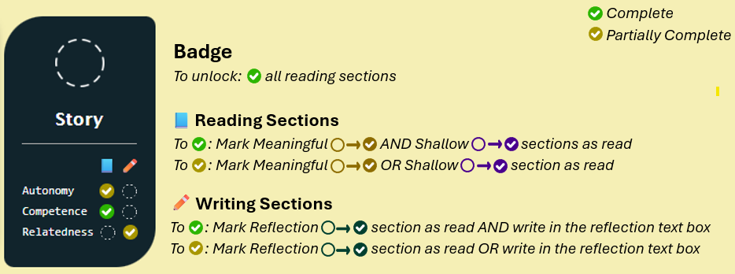

Act I - The Magic of Games
Games are having a moment. Video games, in particular, are more engaging than ever, but board games are experiencing a Cambrian explosion, too.
Almost everyone plays games. Children and teenagers are obsessed with making masterpieces in Minecraft or designing and playing their own creations in Roblox. Adults relax for countless hours playing cozy games like Animal Crossing and Stardew Valley, or get lost exploring in games in the Legend of Zelda series. Then there's the unmatched pull of games on smartphones; these mobile monsters cause us to lose so much time.
Source: https://www.sportskeeda.com/minecraft/5-best-minecraft-cave-build-ideas-2022
What is it about games that enrapture us so? Why is it that we will spend so much of our free time solving challenges and completing tasks that don't matter to our lives?
It's the feelings that games give us. It's the feeling that our choices matter, even to a virtual character or made up world. It's that we can tangibly experience ourselves getting better even when we fail at a task or challenge. It's the connections we feel as we play with others, contribute to communities revolving around the game, or even the emotional payoffs we have from helping non-player characters (NPCs) in the game.
It's these feelings ‐ autonomy, competence, and ‐ that form the foundations of motivation.
Act II - The Psychology of Motivation
This framework of motivation is called Self-Determination Theory and it was developed by Deci & Ryan, 2000. According to this theory humans learn best (and in general tend to thrive) when three main needs are met:
- Autonomy: The feeling that we have the freedom to make meaningful choices.
- Competence: The feeling that we can grow and improve.
- : The feeling that we belong or connect to others.
When these needs are sufficiently met, then people are more easily able to reach a state of psychological flow. This flow state is the same one discussed by Mihály Csíkszentmihályi, in which people easily lose track of time and challenges feel fun, especially if they are scaffolded well for our abilities.
On the other hand, when these needs are not met, engagement becomes shallow and more externally focused.
In other words, when people feel enough autonomy, competence, and relatedness, they develop intrinsic motivation, where they enjoy the activity for the sake of the activity. However, when they don't, they are more likely to develop extrinsic motivation, which still gets them to do the activity, but only (or primarily) for the reward offered during or after completion.
Act III - Gamification versus Gamefulness
Gamification seeks to make use of game elements in non-game contexts (Deterding et al., 2011a; Deterding et al., 2011b), like classrooms and workshops. Apps like Duolingo or Headspace tend to use gamification to encourage adherence, engagement, and consistency.
Source: https://taggbox.com/blog/gamification-marketing/
While it sounds great on the surface, it's important to be intentional when applying these game elements.
Gamification gone wrong can lead us down a road toward building what game designer Ian Bogost calls "exploitationware" (Bogost, 2011). Shallow implementations, like grafting on points, badges, and leaderboards without much thought, can lead to disengagement and extrinsic motivation.
Source: https://www.linkedin.com/posts/t-fulya-eyupoglu-ph-d-010a9417_gamification-isnt-the-problem-bad-design-activity-7298415665642635264-icJu/
Gamification done well, on the other hand, is more aligned with something called gamefulness or gameful learning. This is something closer to what Karl Kapp focuses on in his research and books (Kapp, as cited by Bevins & Howard, 2018). In gameful learning, the gamification system is constructed in such a way that emphasizes the components of intrinsic motivation: autonomy, competence, and .
This concept of gameful learning is core to the framework proposed by Proulx et al. (2017). In their paper, they link a variety of game mechanics to the needs of Self-Determination Theory.
Building on Proulx et al. (2017)
This explorable explanation seeks to expand on Proulx et al. (2017)'s work by:
- Contrasting shallow and meaningful implementations of select game mechanics as they relate to different psychological needs.
- Sharing non-digital "recipes" that educators can adapt and implement into their own classrooms.
- Experimenting with the game mechanics by making them come to life through play.
Act IV - Bridging Games, Learning, and Motivation
Below, you'll find a table/matrix. On the left side are our Game Mechanics and along the top we see our Self-Determination Theory Needs.
Each cell represents a choice that we have as instructional designers. We can choose to nurture intrinsic motivation through meaningful implementations or we can hinder it through shallow implementations.
In the next Act, you'll get to explore the game mechanics in any order you'd like.
Act V - Implementing Game Mechanics
In this Act, you'll explore different game mechanics and see how they can be implemented in both shallow and meaningful ways to either hinder or nurture intrinsic motivation.
Each game mechanic has its own card. On each card, you'll find:
- A badge that will be unlocked as you make progress with that mechanic.
- A collection of smaller checkmarks that can be unlocked through completing the readings and writing reflections on that mechanic.
How to Read the Game Mechanics Cards
How to Use the Game Mechanics Cards
You can select a card by clicking on it. This will reveal that mechanic's section, where you'll find:
- A brief description and introduction to that mechanic.
- Sub-sections with shallow and meaningful implementations, as well as reflection questions for each self-determination theory need.
- A non-digital recipe that you can try out to experience the mechanic in a tangible way in your own classroom.
To encourage autonomy, the cards allow you to visit the mechanics in any order you want. To encourage competence, you can track your progress using the earned badges. And to encourage relatedness, you can share your reflections with others using the download button found in the box below.
A Note About Your Data Before Continuing
Your progress and reflections are saved automatically in your browser's local storage. This means that your progress and reflections are yours and yours alone.
It also means that if you clear browser history, you will likely lose your data. And, that you can't share your progress across different devices or browsers.
You can download or delete your data at any time using the buttons below.
Important: If you delete your progress and reflections, there is no way to recover them. If you want to keep a copy of your reflections, please download them first.
Game Mechanics Cards
Each card below represents a different game mechanic. Click on any card to explore that mechanic in more detail.
Autonomy
Competence
Autonomy
Competence
Autonomy
Competence
Autonomy
Competence
Autonomy
Competence
Autonomy
Competence
Autonomy
Competence
Autonomy
Competence
Game Mechanic: Points
Points are numerical representations of progress.
In the world of education, points are often used as a way of attaching numerical value to certain tasks to indicate difficulty or to encourage/require participation.
In games, points are a very commonly used mechanic. Most often they are coupled with competition to determine overall winners using the accumulation of points earned through various in-game actions. A common implementation is the High Score, more common in older video games and arcade games. High scores are essentially a form of Leaderboard.
Source: https://animalia-life.club/qa/pictures/game-score-clip-art
Using Points to Address SDT Needs
Autonomy
Let's consider how this very common mechanic connects to the self-determination theory need of autonomy. When it comes to autonomy, the key is choice, so points need to represent some kind of meaningful decision. Here are some examples of both meaningful and shallow implementations you can try out.

One way to implement meaningful choice into points is through allowing learners to select from a menu of challenges, each with different point values related to their difficulty or required skill.

In essence, the absense of choice is what makes an approach shallow.
These are already commonly used when it comes to required assessments that have point values assigned by the educator and there's no choice given to the learner about the assignment's weight, the type of assignment, the skills assessed, or other aspects of the assignment.

- How do learners have control over how they earn points?
- What do points represent to the learners? Are they useable? If so, for what?
- How might the required competencies be met while allowing students to personalize their learning?
Competence
Let's ponder how points connect to the next need: competence. When it comes to competence, the essential focus is on growth, and eventually mastery in the skill or topic. Points need to represent progress toward that goal of mastery. Let's look at a meaningful versus shallow implementation of points with respect to competence.
One way to use points is as a marker for progression as the learners develop and practice certain skills.
The keys here are ensuring that the points feel connected to the development, so the learners can see their progress in mastering particular skills.
A simple visual representation for this is a progress bar, which quickly provides feedback about where they started, where they're going, and how far along they are right now. Different progress bars for different skills can provide quick feedback about the state of their learning.
On the other hand, an example of a shallow implementation is one where the points don't really matter and act as tiny rewards.
If they don't mark mastery, then points run the risk of becoming arbitrary and meaningless.
They may still motivate some learners because the incentive structure is still there, but could undermine the goal; learners face challenges and complete tasks for the quick hit of dopamine rather than as a way to develop their skills.
- How might points be used to scaffold one of your lessons or units?
- From the perspective of one of your learners, what do you believe is likely to happen if you assign too many or too few points to different assignments? How might you balance them?
Relatedness
We already mentioned it a little earlier, but now let's dive into how points might connect to the need of relatedness. When it comes to relatedness, connection is key. Points need to bring learners together or allow learners to feel like they are contributing to something larger than themselves. Here are some examples of meaningful and shallow implementation that you can experiment with.
Like in the Harry Potter series, perhaps learners' earned points could contribute to a shared collection for their group (or the entire classroom).
The implementation is critical, however, since competition between groups could lead to shame for learners who don't or can't contribute as much as others.
The culture of the classroom matters greatly, and as such, any inclusion of points needs to be considered carefully.
Points that are allocated only to individuals or for individual purposes can undermine relatedness, and can lead, intentionally or unintentionally, to comparisons between learners, often creating or reinforcing inequalities.
This doesn't always happen, but the potential is there and needs to be considered when experimenting with points.
Leaderboards that show the progress of learners can embarrass those toward the lower end, especially if there are inequities that have not been addressed.
- How might you incorporate points in a way that reinforce collective progress?
- How might you mitigate some of the challenges involved with both shared points and individual points when it comes to social dynamics in your own learning environment?
Non-Digital Recipe Using Points
The Effort Economy
Materials Required:
- Worksheets for your lessons
- Progress Board for each group
In your classroom, to activate autonomy, provide a variety of worksheet options to each learner, focusing on one or more skills.
To satisfy competence, assign point values to each worksheet based on difficulty.
Then, to activate relatedness, allow the learners, upon completing the worksheet, to choose to keep the points for themselves to spend on individual rewards, or to contribute the points to their group or to the classroom overall for larger, collective rewards instead.
Game Mechanic: Badges
Badges are qualitative markers that represent milestones.
They function similar to points, but are categorical rather than numerical.
One benefit of badges is that they have more symbolic meaning than points, which are more likely to feel arbitrary. This ties into another benefit of badges, which is their flexibility.
Not only can badges be earned through point accumulation (if desired), but learners can acquire them through non-points methods, too, such as helping other learners, or through more personalized ways like "Most Improved" or "Peer Recognized" or "Creative Problem Solver".
In terms of drawbacks, much like with points, if they are overused or aren't attached to meaningful milestones, then they can lead to extrinsic motivation.
In games, badges are one of the most common mechanics used. Many games use them as meta-game extras for those focusing on completion or who want bragging rights for accomplishing a particularly arduous achievement.
Source: Little Kitty, Big City game on Steam
But badges appear in the non-digital world, as well. Belt ranks or colors in martial arts often indicate the skill level and a form of mastery. Merit badges express specific accomplishments or skills.
Source: https://www.scoutingnewsroom.org/merit-badges/
Using Badges to Address SDT Needs
Autonomy
Now, let's consider how this very common mechanic connects to the self-determination theory need of autonomy. When it comes to autonomy, the key is choice, so badges need to represent some kind of meaningful decision.
Given autonomy's requirement of choice, a meaningful implementation might be allowing a learner to create the design or name of the badge, as well as have some say in either which ones to pursue or how each badge might be earned (within the parameters set by the educator).
Badges are best when they attach to challenges that "go above and beyond" or "take a unique approach".
And allowing learners to make their own badges (within guidelines) may make a teacher's job a little easier than if the instructor were to design all the content themselves.
A sense of independence and personalization is often connected to choice. As such, a shallow implementation might be using or making a single set of pre-canned badges for all learners to strive for (without their input).
- What are some other places where you've seen badges (or their equivalents)? What did the badges represent?
- What are your biggest concerns, if any, about giving your learners the freedom to decide on or design badges they want to aim for?
- Some learners prefer less autonomy for the promise of discovery, whereas others may feel boxed-in by the structure; how might you balance these perspectives if you choose to build badges into your lessons?
Competence
When it comes to competence, the essential focus is on growth. Badges work best when they represent milestones in a learner's development.
Badges are designed in a way that allow for them to be attached to meaningful events or challenges.
When a learner looks back at the badges they've earned, they can recall stories associated with each one, as well as their overall learning journey.
Badges are awarded for tasks already expected of the learners, such as finishing a test or other assessment.
There's no meaning attached to the badges and since it's required, it only signifies those learners who did not accomplish the task rather than signifying those who went above and beyond.
- How might you encourage (or assist) your learners with building their own scaffolding through the use of badges for topics they are interested in outside of the classroom?
- How might you design badges (or co-design them) so they communicate progress even when learners make mistakes?
Relatedness
Relatedness is all about connection. Badges can promote or undermine that, depending on their implementation. Let's see examples of badges can be implemented, in meaningful and shallow ways.
One way to meaningfully implement badges is by making them peer-based.
Learners have the opportunity to look for and notice positive things their peers are doing and award them with badges.
Like with points, if badges are purely based on the individual achievements, separate from, or even compared to, other learners, this can cause division rather than bringing them together.
- For peer-based badges, how might you mitigate the potential effects of cliques while also ensuring the giving of the badge feels authentic to the learners?
- How might badges foster empathy in your learners? How might badges impede empathy?
Non-Digital Recipe Using Badges
Recognizing Growth
Materials Required:
- Journals where learners can draw/write down/place their badges (earned and those still-to-be-earned)
- Potential list of badges (could be generated by you, generated by the learners, or co-created all together).
To embrace autonomy, allow the learners to either choose (or design their own) collection of badges that resonate with them (their interests, ways they want to grow, etc.). Depending on the topic and age group, maybe have them start with 3 to 5 badges to strive for.
For competence, either provide or work together on criteria for those badges so they symbolize growth for the learner(s).
To bring in relatedness, perhaps make it so a few of the badges are either collective, such that the class earns them together, or peer-awarded, where learners give awards to other learners in recognition of their accomplishments, hard work, generosity, etc.
Game Mechanic: Progression
Progression is a tangible representation of improvement
In games, progression is critical for keeping players engaged because without meaningful progression, players might get bored or frustrated and stop playing.
Education is very similar. Educators scaffold their topics and provide different levels of challenge for different learners in order to, ideally, keep learners in a flow state.
In both games and education, progression provides meaningful goalposts to aim for. Ones that feel achievable and consistently push them out of their comfort zone.
Source: https://duoplanet.com/duolingo-learning-path/
Progression works well with other game mechanics. Points and badges are often used with progression to mark milestones, and stories naturally progress over time.
Using Progression to Address SDT Needs
Autonomy
Autonomy, as it relates to progression, is about having the ability to choose how they progress, even if that progression is restricted by the overall scaffolding.
The use of a "choose your own adventure" kind of progression is one way to meaningfully implement this mechanic.
It allows learners to select their own path through the material, often at their own pace (when feasible), promoting autonomy.
Linear (i.e., no choice) paths have a tendency to reduce autonomy.
While learners can see their progress, they have no choice in how they progress.
This is doubly true if learners need to move in lock-step rather than adjust the pacing to what fits their needs.
- Choose your own adventure can be a lot of extra work for educators, what alternatives can you think of for allowing for choice in progression?
- How might different pathways lead to learning the same competencies?
- Looking back at your own learning experiences, when have choices felt meaningful versus superficial?
Competence
In a sense, progression is an embodiment of competence since it links so tightly to growth. The main idea here is to make competence visible and achievable so it remains motivating even when the challenges are difficult.
Scaffolding is done in a way where skills and knowledge are built on top of prior ones.
This can help to reinforce fundamentals while also pushing learners just enough to provide a challenge, promoting growth.
The scaffolding also blends skills and eventually provides moments that mark mastery.
The pacing of the scaffolding is inconsistent; scaffolding is too steep or too shallow (too much or too little challenge), leading learners to feel frustrated or bored.
- How might you encourage learners to apply the skills they've mastered to a different domain?
- How might a learner know they have grown or improved rather than simply completed an activity or challenge? How might you help them learn how to build proper scaffolding for themselves to promote lifelong learning?
Relatedness
When it comes to relatedness, progression needs to provide some form of connection to others.
This could be simply feeling supported by peers or educators, it could involve growing together with peers, or even contributing to the overall learning environment through their progress.
Learners recognize and celebrate each other's progress.
Learners can also collaboratively-design new tasks for those learners seeking more challenge.
And they can provide mentorship and connection to those who may find some tasks a little too challenging.
The overall learning environment is supportive and cooperative.
Learners are isolated from each other and are discouraged from helping or intervening with peers.
This may be problematic for learners who may feel bored and want extra challenges.
And it can be particularly isolating for learners who may feel frustrated or anxious and want hints or assistance with a task that's too challenging for them at the moment.
- Scenario: One learner is struggling with a task and another is seeking a new challenge. How might you cultivate a culture of helpfulness while also protecting against the potential dynamic where the helping learner does the work for the one who is finding the task too difficult?
- How might progression naturally create competition? How might that competition be healthy or unhealthy for different learners?
Non-Digital Recipe Using Progression
Classroom Skill Tree
Materials Required:
- Construction Paper
- Tape / Sticky tack / Command strips
- Post-It Notes (ideally different colors)
The goal of this "skill tree" is to give learners a guide for how they, and their peers, are progressing with different competencies during the course of the term.
The first step is that the teacher will need to prepare the competencies that the learners need to master by the end of the term. Ideally, the teacher will already have a good sense for the scaffolding. Optionally, include the learners in balancing the scaffolding to help them build intuition for doing so for themselves in the future.
Based on the scaffolding, give the learners a general tree-like structure for them to be creative with. The learners will collectively bulid a tree out of construction paper that has a variety of branches. On each branch, have them place symbols representing different kinds of challenges. Even though the tree is primarily cosmetic, it may still provide enough autonomy and generate motivational buy-in for learners.
Note: Each branch should have related skills that build on one another as a learner goes from the trunk to the leaves. Each next step will build on previous ones. These activities are largely created/determined by the teacher.
To the degree the teacher wants to build in more autonomy, allow different pathways up each branch, or even allow learners to select which branches (i.e., class content) they want to engage in first.
Competence is naturally built in by the teacher providing the scaffolding that is visualized by the learners through the branches of the tree.
As the class moves through lessons and learners practice new skills, they'll reach mastery moments. These are areas of the tree where learners can reflect on what they've learned, write their thoughts on a Post-It Note, and stick it on that part of the tree. This represents relatedness, since they'll get recognition for reaching that milestone and can feel a shared sense of belonging and support as more learners also reach it. It may even inspire them to mentor learners who are finding it difficult to climb certain sections of the tree.
Game Mechanic: Story
Stories explore and explain situations and experiences, often infused with emotional content to inform or affect change.
Stories are an integral part of being human. We teach, learn, share, understand, connect, and generally communicate through stories.
Some games are full of stories, and the entire gameplay revolves around those tales. On the other hand, some games have no story or limited narrative structure. But, they still have stories, since the players' journeys end up becoming the stories.
A great example of this is Pandemic Legacy since players go through a series of games where their actions and decisions impact the unfolding story. It also happens to be an excellent cooperative game.
Source: https://www.zmangames.com/game/pandemic-legacy-season-1/
We can utilize story in a variety of ways in education to motivate learners. Stories can empower and connect, but if implemented poorly, can distract from the subject being taught.
Using Story to Address SDT Needs
Autonomy
When we watch movies or read books, we often have little or no influence over the story. This is true of many games, as well, though games at least give us a semblance of control due to all the other aspects that provide autonomy.
Some books, movies, and games also fall into the choose-your-own-adventure genre, but it's challenging to design meaningful choices that do more than change some minor plot points or eventually end in the same result.
The essential concept for autonomy when it comes to the story game mechanic is the ability to impact the narrative.
Allow different groups or the entire class to build the world and tell the story.
It's a lot less effort for the teacher, provides heaps of autonomy for the learners, and can help learners develop creative thinking and collaboration skills.
Writing the entire story for the learners to follow. In a sense, this is using pieces of story as a reward for completing tasks, and they have no agency in influencing the story.
- How might you guide a classroom or teams in creating a shared world where everyone can contribute and build tasks and challenges that fit in with the narrative?
- How might the use of improv during a shared storytelling session land with your learners?
- How might you design activities that help learners feel more connected to the narrative?
Competence
Interwoven is the word that comes to mind for story and competence.
For story to be effective for communicating competence, it needs to be clearly linked to what is being learned. Even a quick sentence or two that adds framing can help tremendously.
Without that, the story and gameplay (or educational materials) feel disconnected and the spell might be broken.
Activities represent some kind of call to action on the part of the learners.
When designed well, even abstracted puzzles or challenges have an emotional thread that clearly ties it into the tale, and they provide just enough difficulty to make the goal feel worthwhile.
This link between story and gameplay is essential for utilizing this mechanic well.
When the story's various emotional beats don't align with the competencies being learned, it may cause the learners to become disenchanted with the story or disengaged from the skills being learned.
- How might a story reinforce or distract from learning goals?
- How does the narrative provide deeper insights into the content being taught?
Relatedness
Immersion and sense of belonging are powerful aspects of stories.
In terms of relatedness, story has a natural advantage over other mechanics, especially when shared storytelling or well-designed, integrated challenges connect learners to peers or characters in the story.
Learners collaboratively create the story, each one feeling connected and able to bring personal experiences into the narrative, enrichening it.
Any story structure that feels unsafe. This can range from uncomfortable topics to stereotypes, biases, etc.
- How might you allow for shared storytelling narrative that also feels safe for all learners? What supports learners in co-creating stories?
- How might you foster a shared world where learners recognize each other's discoveries and actions in it?
Non-Digital Recipe Using Story
Story Votes
Materials Required:
- Index Cards
- Tape
Break the learners into groups of 3 to 5 and give each group five index cards.
On the first index card, each group will write a short setting for the shared world. Each group will then reveal what their setting is. After all settings have been revealed, learners will use ranked-choice voting to whittle down the options to the one that reaches a majority. That winner will become the setting.
On the second index card, each group will write a short sentence for the overall conflict happening in the story. Repeat the ranked-choice voting method to choose the conflict.
On the third index card, each group writes a short sentence on how the learners think the story could connect to what they are learning at the moment. Repeat the ranked-choice voting method.
On the fourth index card, groups point out how this world is different from the real world. Feel free to use ranked-choice voting here, or try turning it into a discussion instead if desired.
On the last index card, with a lot of the overall structure of the world being created by the learners, allow each of them to contribute their own unique part to the world. This might be a character, city, natural or artificial phenomenon, creature, historical event, etc. Have them aim for it to "make sense" within the rules established thus far (i.e., setting, conflict, how it connects to the competencies, and how it's different from the real world) whenever possible.
Use this world to help build out the story and activities that are interlinked with the story. Repeat or modify as needed to continue letting the learners create the world and guide the direction of the narrative.
By allowing learners to create the story and vote on it, they fulfill both autonomy and relatedness. Competence comes through the gradual building of the story and its elements, during this initial storytelling session, as well as through future iterations that continue to develop the narrative. In addition, it also supports competence by providing the teacher with a general structure and plenty of learner-created content to experiment with as they design the lessons and activities.
Game Mechanic: Co-Design
Co-Design is creating learning experiences with learners, inviting them to co-create various elements of the learning environment.
In games, especially digital games, the sandbox genre is probably the closest we get to co-design. Some games allow for players to create their own games or levels using the tools provided, like in the Mario Maker games, too.
Source: https://www.nintendo-insider.com/seven-things-you-might-not-know-about-super-mario-maker-2/
In education, co-design is a useful mechanic to include because it shifts learners' mindsets from consumers to co-creators of educational content.
Using Co-design to Address SDT Needs
Autonomy
The main idea with autonomy when it comes to co-design is allowing learners to have the ability to meaningfully direct various elements of their own learning.
One idea is to use a what, when, how, and why kind of framework.
The teacher picks, say, what needs to be done and why, and the learners have an opportunity, within certain constraints, to determine the when and how.
This allows for enough choice that learners have autonomy, but where teachers are able to set boundaries to ensure the material is learned.
One shallow implementation would be to ask learners for their input on different elements, but then ignore the input altogether or modify it so heavily that it no longer resembles what the learners came up with.
- What are some major issues you can see with trying to implement co-design into your lessons? How might you mitigate some of these issues?
- How might you guide learners during co-designing so they see the value of different pedagogical tools or approaches without being too steeped in the theory?
Competence
Much like how competing against an opponent with roughly equal skill can often teach more than solo learning, or working together with a peer allows for the exchange of novel ideas and perspectives, co-design can encourage and accelerate growth through an apprentice-like model.
Learners are invited to co-create.
The teacher is reflective, expressing and explaining why they might take one approach over another, but allowing learners to explore and experiment with those approaches, constraints, etc.
Learners are invited to co-create, but with minimal guidance, potentially causing confusion or stress.
- How might you embed tiny experiments into co-design sessions so learners develop skills of iterating and testing ideas quickly related to the topics they are learning?
- How might co-designing make your own design skills better?
Relatedness
Relatedness is primarily about feeling a sense of community or a sense of belonging.
Co-Design, when implemented meaningfully, allows for this through building shared learning structures or even a shared learning culture.
Co-Designs are discussed and refined through input from all or most of the learners.
Or another option may be to allow learners to present ideas and all learners vote on those ideas to see which one(s) are implemented into the final designs.
If a co-design session is dominated by a small percentage of the learners, or if not moderated well so it feels safe, then the session may feel more isolating than connecting.
- What rules might you incorporate to make it so learners can feel safe and connecting during co-design?
- How might co-design reinforce any cliques or other kinds of social dynamics? How might you mitigate negative effects of those dynamics?
Non-Digital Recipe Using Co-design
Tiny Experiments
Materials Required:
- The current syllabus
- Index cards
One recommendation is experimenting with assessments.
Take one element of the learning environment, process, or experience and allow learners to brainstorm new ideas to try out. In this way, it primes learners to challenge systems critically, looking for ways to improve them. Having them do so collaboratively empowers them further, too.
For example, let's take assessments as the experimental part for this week, month, or terms (or other time frame that seems appropriate). In preparation for the proposals that the learners will design, the teacher will need to set the constraints and potentially provide example alternative methods of assessment in case learners are not sure what is available.
In their proposals, learners should give reasoning (i.e., hypotheses) for why they think their chosen assessment will work and ultimately the teacher will give reasoning for why an idea will or won't work given pedagogy and other requirements.
After the learners and teacher have agreed upon a set of experiments to try out, the learners should test those experimental assessments one at a time. For each, they should report what their hypotheses were, what worked, what didn't work, and how they might improve the assessment or use it in a different way.
By letting them experiment, the learners have autonomy. By having the learners given reasoning for their ideas, and by having them listen as the teacher gives their reasoning, as well, competence is satisfied. And, when done collaboratively, this co-design session promotes relatedness.
Game Mechanic: Collaboration
Collaboration is two or more people working together and supporting each other to achieve a shared goal.
Collaboration is very common in our society. Most complex projects are too big for individuals to complete within a reasonable time frame and often require collections of skills that take years, and even decades, to hone. As such, it's an important mechanic to implement and skill for learners to develop.
Forbidden Desert is a great example of collaboration in games since each player must communicate well, share resources, and work together to survive long enough to find the pieces of a flying machine hidden in the desert.
Source: https://gamewright.com/product/Forbidden-Desert
In education, this often looks like group projects or study groups.
Using Collaboration to Address SDT Needs
Autonomy
Autonomy requires a sense of agency, so it's important that learners are given a choice with respect to who, what, when, why, or how they work with others.
Assign learners to groups (or allow them self-organize).
Provide a template for the groups to use to define roles, responsibilities, how they'll choose directions for the project, etc.
They fill it out together with the goal of getting buy-in from each other to mitigate the all-too-common issue of one or two members doing most of the work while the others coast.
Even if learners are able to form their own groups, a group project can still fall into the shallow category when there's not enough structure to promote a sense of autonomy.
- What are some benefits and drawbacks to allowing learners to choose their own groups?
- How might you provide modeling for your learners so they can learn (or better understand) how to work in groups? How does this modeling support their independence and interdependence?
Competence
Competence in collaboration tends to look like collective growth and contribution to the group. Learners can see their own progress, their teammates' progress, and how everyone contributes to the shared purpose.
Create structures so challenges require a combination of different skills.
Require learners to pair up to work on tasks or sub-tasks to allow them to naturally share knowledge and approaches with each other.
Encourage group reflection, as well, so groups can improve their strategy and ensure each member is growing.
When the only focus is on the outcome of completing a deliverable, then that can sometimes lead to maladaptive strategies like:
- "divide and conquer" (without reflection or meaningful interaction)
- "one person does all the work"
- "hierarchical decision making" (where a handful of students make the decisions and feel invested while the others do enough to scrape by)
- With respect to skill development and learning competencies, how does collaborative learning differ from individual learning? How are they similar?
- How might you design a collaborative experiment that allows learners to practice skills that would be difficult for them to practice on their own?
Relatedness
The key for relatedness in terms of collaboration is feeling a sense of belonging.
Even if there is some friction among the different teammates, learners who feel like they can contribute to the group are more likely to experience a sense of belonging.
Providing structure that encourages learners to share their experiences and to mentor each other can lead to a stronger sense of belonging and safety within the group.
Without structure to encourage reflection or sharing, the "divide and conquer" could devolve into parallel work that gets stitched together at the end in service of the outcome alone.
Without guidance on how to manage conflict or embrace everyone's ideas and thoughts, sometimes learners expressing more dominant behaviors can take over, potentially devolving into either a more hierarchical or "one person does all the work" dynamic.
- What are some norms or skills you'd like your learners to incorporate into their group dynamics? What are some you'd like them to avoid?
- Sometimes groups just don't work for a variety of reasons, how might you mitigate issues within these groups and how they might affect the broader learning space?
Non-Digital Recipe Using Collaboration
Concept Cartography
Materials Required:
- Post-It Notes
- Colored Pencils/Markers
The goal of this project is to practice collaborative ideation.
Assign groups (or allow learners to self-organize). Then give the groups their challenge(s).
To promote autonomy, the first step is for each individual learner to use the Post-It Notes to write down 3-5 ideas, questions, concerns, examples, solutions, etc. related to the challenge.
To encourage competence, the next step is for each group to combine all their individual Post-It Notes on a board or wall or desk. They'll categorize the different notes, moving them as needed to form the different clusters. Along the way, they'll need to make a case for why these need to be moved or clustered in the way they're proposing; this encourages deeper thinking on the topic and groupings and exposes them to new ideas and perspectives from other learners.
To promote a sense of relatedness, each group can then narrate their collective understanding of the challenge, including and reflecting each member's contributions in some way.
Game Mechanic: Competition
Competition is the comparison of actions or performances against others, a set of standards, or yourself.
In reality and in games, competition provides a sense of comparison, which is useful since it helps you know where your current behaviors, actions, or performances are relative to other people, to some set standards, or to yourself.
Source: https://www.cnn.com/2023/01/14/sport/chess-variants-explainer-spt-intl/index.html
Competition is incredibly common and can be extremely motivating. Success feels good, especially when it's earned through dedication and growth. At the same time, it can be disheartening if you can't seem to win regardless of how hard you try.
Using Competition to Address SDT Needs
Autonomy
For autonomy, choice is key. As such, learners need to feel some agency over who, what, when, where, why, how, or even if they compete.
One way might be to let learners set their own goals and compete with themselves.
Another might be to allow learners to opt-in or opt-out of competition, or to choose, when possible, who or what they are competing against.
Standardized tests come to mind. Learners might be forced to participate and the stakes may be quite high.
- How do your learners engage with competition? Do they find it energizing or draining? If they have a choice in competing, does their viewpoint change?
- What does success mean to you? To your learners? If winning is important, why? If winning is not important, why?
Competence
With respect to competence, competition has a natural advantage since competition itself often promotes growth and mastery. Let's look at some examples of meaningful and shallow methods of incorporating competition.
Learners competing against themselves can promote growth since they notice when they are improving.
When competing against other learners, focusing on what they can learn from the experience (win or lose) can also promote growth.
Depending on how high the stakes are and the intensity of the environment of the competition, if the only things that matter are the outcomes, then it can promote playing-it-safe kinds of behaviors (stagnating growth) or even maladaptive behaviors like cheating.
- How do your learners interpret outcomes? As feedback on how to improve, as praise or criticism if they performed or didn't perform well, or something else?
- When looking at fairness, how might you design a competition that helps to mitigate inequalities among your learners?
Relatedness
Competition often includes a social component, but its implementation can cause the amount of connection the participants feel to vary. Let's see some examples of when connection might be stronger or weaker.
Competing in teams can promote a sense of connection and mutual respect among team members.
Competition where participants are well-matched (i.e., roughly similar skill levels) can also promote relatedness.
Zero-sum games tend to promote a single winner, winner-take-all kind of mindset. If the competition is entirely focused on that kind of win or lose perspective, then it can promote disconnection.
- How might teams promote mutual respect? How might them undermine it? What makes for a good team?
- How might you promote connection among competitors who tend to have a win or lose mindset?
- When are rivalries healthy? When are they unhealthy?
Non-Digital Recipe Using Competition
Competition: Have It Your Way
Materials Required:
- Board with different project ideas for learners to choose from.
- Post-it Notes where learners can write their names and stick them on the project they want to compete in.
The overall goal is to provide a few different projects/competitions for learners to participate in. To provide autonomy, the learners can choose which project to participate in. Ideally, they will have the ability to choose between:
- Competing against themselves
- Competing individually against others
- Competing as a team against other teams
To promote competence, include discussions that focus on learning from mistakes, celebrating creative solutions or strategies, and allowing learners to reflect on their own growth through the competition.
For teams, relatedness can be fostered through encouraging each member to embrace their own skills and also learn from their teammates. The same can occur for individuals. If they compete against others, have them focus more on learning from their opponent. If they are competing against themselves, have them reflect with others who chose the same (or a similar) project to learn from each other.
Game Mechanic: Roleplay
Roleplay is essentially inhabiting different perspectives than your own, often expressed as playing as a character with their own personality, viewpoint on life, and lived experiences.
This happens in a lot of roleplaying games and action adventure games since you're often playing as a character or party of characters. These characters typically have their own rich inner worlds and interactions and dynamics with other characters.
In D&D, players will often create their own characters and play as those characters, taking on their mannerisms, making decisions based on what those characters would do, etc.
Other games, like Betrayal at House on the Hill, have you assume a character with certain stats. While the characters are pre-defined, players still get to roleplay as those characters, making choices how they think those characters would act.
Source: https://weewabbit.com/betrayal-at-house-on-the-hill-every-edition-guide-review/
In education, roleplaying could allow learners to build empathy and the skill of perspective-taking.
It could also be a way for them to channel traits of certain careers or people, such as applying design skills by "thinking like a designer" or mentoring peers by "thinking like an educator."
Using Roleplay to Address SDT Needs
Autonomy
The theme for autonomy is choice. In the case of roleplaying, learners have agency to decide how their character or role might make choices or interact with others during a session.
Learners are able to choose the role they want to play (or better, create the role).
As they play the role, they may need to act in a way that's consistent with their created character, but they are given plenty of freedom to act in ways they see their character acting, even if it's different than expected.
Learners are cast as playing certain characters rather than choosing.
If it's a play, for example, then the lines are most likely scripted, as well.
The choices may be in how the acting is done, but, depending on the learner, that may or may not be sufficient to qualify as autonomy.
- Some learners can "get into character" more easily than others. How might you encourage or help those who may be less comfortable to participate?
- How flexible might you allow the roleplay scenario to be? How would you set ground rules ahead of time for establishing comfort and boundaries?
Competence
Competence is all about improvement. Within the context of roleplaying, competence is largely about being able to assess and respond to situations within a scenario from the borrowed perspective.
Roles played are scaffolded to gradually build familiarity and comfort with imagining and portraying different traits of the character.
It might simply start with motivation and weave that into some decision making.
It might evolve into mannerisms with deep character development or having the learner make difficult choices they would not normally make based on their understanding of their role.
The roles are not scaffolded well, leading to frustration if the learner's skills don't yet match the levels required.
Scripted characters can be ok, particularly since different emotional qualities can be developed and expressed.
- How might you design and develop a role to allow learners to ease into the character?
- How might you encourage learners to reflect on and give reasoning for their decision-making while in-character?
Relatedness
Relatedness is largely about contributing to a shared experience, but is also about feeling safe while expressing vulnerability.
It can be a surprisingly vulnerable experience to roleplay as a different character, so a meaningful implementation will likely address that as best as possible.
Not all roleplay is theatrical, so allowing learners to take on different perspectives through other media can be quite beneficial for feeling like they can contribute to the shared imagination without needing to behave in specific ways.
Allowing for different types of roles and methods of expression is likely produce meaningful connections between learners.
One shallow method is to force all learners to participate and to do using a single form of expression, such as acting.
Another involves the roles themselves; characters that are too one-dimensional. or that depict stereotypes can produce disconnection and perpetuate problematic biases.
- How can you encourage learners to listen and respond to each other during roleplay sessions?
- How might you incorporate non-acting roleplay into your classroom? Or blend acting and non-acting roleplaying?
Non-Digital Recipe Using Roleplay
RNG Roleplay
Materials Required:
- A variety of roles written on index cards
- A collection of scenarios related to the current topic or subject being learned
- A space to perform or share
The game is for each learner to get three index cards. On every card is a different role. These roles can be created ahead of time or co-created with your learners. Learners may not look at their index cards ahead of time.
Allow the learners to divide into various groups based on medium of expression. Some may choose acting, others writing, drawing, etc. Allow them to switch groups as desired. This freedom promotes autonomy.
Given the topic or subject the class is currently learning, randomly select a scenario and read it aloud.
The learners who have chosen to act will have five to ten minutes to come up with a skit given one of their random role cards.
The non-acting learners will use this time to write or draw based on one of their own random role cards.
After the five to ten minutes are up, have all the learners quickly share their expressions.
Repeat as time and interest permit.
By working in small groups and discussing each other's approaches to the scenarios, learners will experience relatedness. The act of looking at the scenario with a different perspective can also promote competence as they practice thinking in new ways.
Act VI - Gameful Design
As we saw above, each game mechanic can be implemented in meaningful or shallow ways. The trick is the intentionality behind their design.
Gameful design doesn't have to involve digital tools since many of these game mechanics can be implemented using paper prototypes, discussions, or other analog media and methods. Please take a look at and modify any of the "non-digital recipes" that resonate with you.
But arguably, the most important part of design is empathy; designing for learners depends on how they each (and collectively) experience autonomy, competence, and . When we design our environments (e.g., classrooms, trainings, etc.) to intentionally foster choice, mastery, and connection, we're not only helping our learners learn better, we're helping them thrive as human beings.
I'll leave you with one final question:
How might you pursue intrinsic motivation in your own learning spaces?
Thank you so much for reading!
References
- Bevins, K. L., & Howard, C. D. (2018). Game mechanics and why they are employed: What we know about gamification so far. Issues and Trends in Learning Technologies, 6(1).
- Bogost, I. (2011, May 3). Persuasive Games: Exploitationware. Game Developer. https://www.gamedeveloper.com/design/persuasive-games-exploitationware
- Deci, E. L., & Ryan, R. M. (2000). The" what" and" why" of goal pursuits: Human needs and the self-determination of behavior. Psychological inquiry, 11(4), 227-268.
- Deterding, S., Sicart, M., Nacke, L., O'hara, K., & Dixon, D. (2011). Gamification. using game-design elements in non-gaming contexts. In CHI'11 extended abstracts on human factors in computing systems (pp. 2425-2428).
- Deterding, S., Dixon, D., Khaled, R., & Nacke, L. (2011, September). From game design elements to gamefulness: defining" gamification". In Proceedings of the 15th international academic MindTrek conference: Envisioning future media environments (pp. 9-15).
- Proulx, J. N., Romero, M., & Arnab, S. (2017). Learning mechanics and game mechanics under the perspective of self-determination theory to foster motivation in digital game based learning. Simulation & Gaming, 48(1), 81-97.